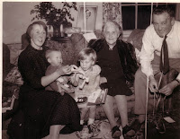
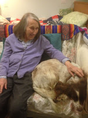

| Solo |
{kind=link}
Jenni Russell of The Times told the story of an elderly couple, Victor and Edna,
who had died at great ages in sheltered accommodation. Their
shared funeral would have been a small affair, attended by a few care
staff members, until someone alerted the RAF, in which both Victor
and Edna had served. The RAF found servicemen and women to carry the coffins
and used social media to appeal for mourners. Hundreds responded and the event
made the local TV news. One ITV reporter described the mourners as ‘the family
Victor and Edna never knew they had.’
| Jenni Russell |
{kind=link}
Russell’s argument takes off from here. I want to copy out everything she wrote but I’d best hold back in case The Times paywall sucks onto my fingers like a vanishing bank card.
She completely refutes that idea that these good people were Victor and Edna's ‘family’. They turned up, she says, ‘to
take part in the solemn ritual for the passing of life because we don’t want
[…] to live in a society where deaths don’t matter. It is reassuring to hope
that none of us will be carelessly discarded at the end.’
Their attendance at the funeral was a gesture, undeniably effective but a gesture that only ‘gives meaning to us, the living. ‘[…] the dead have gone. They have often endured years of loneliness where everyone except professionals have ignored their feelings or memories. They have known, painfully, how indifferent the world can be. Care home managers who appeal for relatives often report that their residents were delightful but they had not had a single visitor for years.[…]
‘A good funeral cannot compensate for years of neglect. It simply makes the rest of us feel better about ourselves. I wish we could swing the focus to the living; that appeals for friends and relatives could happen when someone moves into a home, not after they die; that the appeal for volunteers is for visits to a care home, not graveyard salutes.’ Well said, Jenni Russell.
Their attendance at the funeral was a gesture, undeniably effective but a gesture that only ‘gives meaning to us, the living. ‘[…] the dead have gone. They have often endured years of loneliness where everyone except professionals have ignored their feelings or memories. They have known, painfully, how indifferent the world can be. Care home managers who appeal for relatives often report that their residents were delightful but they had not had a single visitor for years.[…]
‘A good funeral cannot compensate for years of neglect. It simply makes the rest of us feel better about ourselves. I wish we could swing the focus to the living; that appeals for friends and relatives could happen when someone moves into a home, not after they die; that the appeal for volunteers is for visits to a care home, not graveyard salutes.’ Well said, Jenni Russell.
| The conference in Sunderland was in the Stadium of Light football ground, built on the site of a former shipyard. I wondered whether there was a more enduring tradition of family support here? |
{kind=link}
I was in Blackpool last week,, and then in Sunderland, introducing
John’s Campaign to care home managers. Sitting around in small groups with the Blackpool
managers, one after another commented regretfully: ‘We just wish we could get more
people to visit.’ The Sunderland managers (interestingly) seemed more positive about their families, describing them in general as 'very helpful. I’ve heard the same expression of regret, however, in my
own county (Essex) and I've seen people who are never visited.
We hear a lot about the increasing number of people who have no children and also family diaspora but the managers who felt saddened by this problem were not talking about families who do not visit because they're scattered to the four corners of the world; they were talking about daughters who live round the corner and don’t come in: sons who walk past the end of the road every day but never take the turning to the care home front entrance; friends who pop in once and never return. Until the funeral perhaps?
We hear a lot about the increasing number of people who have no children and also family diaspora but the managers who felt saddened by this problem were not talking about families who do not visit because they're scattered to the four corners of the world; they were talking about daughters who live round the corner and don’t come in: sons who walk past the end of the road every day but never take the turning to the care home front entrance; friends who pop in once and never return. Until the funeral perhaps?
I’m disregarding the wider questions of loneliness
in 21st century society; our ambivalence about the balance
of duty and personal autonomy; the political argument about the balance between
family-managed and state provision. Just for now I’m thinking solely about the people who are left unvisited in care homes – particularly those who are living with
dementia. Why don't their friends and family visit? There's the boringness of spending time with someone who no longer has conversation or social skills: there's the feeling of being unnecessary (the carers are so good) -- and there's emotional pain. The daughter who was mentioned in our conversations was ‘too
distressed’ to visit her mother because she ‘couldn’t bear’ to see her like that.
But, just in case
anyone is tempted to rush to judgement, I was talking recently to one of the
most sensible and compassionate people I know; someone who dedicates large parts
of his life to improving community understanding and support for people living with
dementia and their family carers . Even he confessed that he had found himself ‘unable’
to continue visiting his best friend who had Pick’s Disease (fronto-temporal
dementia):
‘So, what did you do?’ I asked, in awe of his honesty.
‘I sent him postcards every week. My wife bought them and I
wrote them. Simple images, easy for him to see with brief messages of
recollection from our shared past.’
This seemed a reasonable compromise. Maybe someone living with dementia can still be helped to feel cared about without visiting in person? Shirley
Pearce, an occupational therapist and woman of wide experience who runs an
organisation called ‘Understanding Dementia’, talked recently about ways that people could
‘feel visited’ even when actual family contact was infrequent. I have a friend who lives in a care home, largely unvisited and suffers from chronic anxiety. Her son sent her a bunch of daffodils last Easter. Since then the care staff have made every petal count. I’ve done it myself: ‘Your son? Oh I know, he’s the one who sent
you those wonderful daffodils – how thoughtful that was! He must love you so
much!!’ (With Mothering Sunday heaving into view I can only hope he’s
about to lash out on another bunch…)
Dementia is a progressive illness. When I was talking with the Lancashire care home managers we agreed that
every bit of dementia education or peer-support group would
give a better chance of help for that daughter who ‘couldn’t bear’ to see her mother. She might feel less alone in her pain, more able to accept that it was illness that was causing the problem. That it wasn't personal. Dementia is a profoundly individual
condition, affecting everyone differently, but my experience has been that a swapped
comment with another friend or family member, as we make a cup of coffee together in
the care home kitchen, can draw the sting of a difficult visit that could have left either
of us hurt and unwilling to come again.
Support from a care staff member will do the same.
Support from a care staff member will do the same.
‘Were you okay the other night, Julia?’
‘Mmm … probably. Why?’
‘Because I saw you parked up in the layby and after I’d gone
past I just wondered whether I should have stopped... ?’
I’d been okay on that particular evening but the
fact that this young girl had noticed and wondered and had wanted to help, gave
me the strength to get through another time when maybe I might have parked in
that layby to have a little weep before I drove home.
 |
| My mother (left) died with dementia. So did Granny (centre right) The odds are high that this will happen to me as well (centre left) |
{kind=link}
A former nurse accompanied me to the
station as I left the Sunderland session. ‘You
know what,’ he said, ‘Most of these people who moan about our care homes now,
just don’t remember what the old long-stay geriatric wards were like.’
Let us who are old enough never forget that we have made progress. When I was writing Beloved Old Age (my take on Margery Allingham’s The Relay, written sixty years ago) I read Sans Everything by Barbara Robb (1967) and The Last Refuge by Peter Townsend (1962) – and I remembered the horror of my visits as a child to my Granny in her geriatric ward in a building that had been the Union Infirmary (workhouse).
Let us who are old enough never forget that we have made progress. When I was writing Beloved Old Age (my take on Margery Allingham’s The Relay, written sixty years ago) I read Sans Everything by Barbara Robb (1967) and The Last Refuge by Peter Townsend (1962) – and I remembered the horror of my visits as a child to my Granny in her geriatric ward in a building that had been the Union Infirmary (workhouse).
 Margery Allingham's description of early 1960s private care home visiting also stuck in my mind: These unwieldy country houses, open to those who do not
require nursing, are often submerged in greenery at the end of long drives;
lost oases of silence and well-kept gloom. All of them, however faithfully
managed, have the same curious atmosphere, which at best is boarding school and
at worst is the Dustbin play. One sees room after room of swaddled men and
women presenting an unmistakable picture of a long wait for nothing at all.
The visiting relatives, seated wretchedly on the edge of their chairs as the
tedious minutes loiter by, seem to be wondering if it is their own consciences
they have called to placate. They try to make it up to the older person by car
rides, by presents, by constant nagging thought and worry.
Margery Allingham's description of early 1960s private care home visiting also stuck in my mind: These unwieldy country houses, open to those who do not
require nursing, are often submerged in greenery at the end of long drives;
lost oases of silence and well-kept gloom. All of them, however faithfully
managed, have the same curious atmosphere, which at best is boarding school and
at worst is the Dustbin play. One sees room after room of swaddled men and
women presenting an unmistakable picture of a long wait for nothing at all.
The visiting relatives, seated wretchedly on the edge of their chairs as the
tedious minutes loiter by, seem to be wondering if it is their own consciences
they have called to placate. They try to make it up to the older person by car
rides, by presents, by constant nagging thought and worry.
Moving on in time I looked again at Ronald Blythe's A View in Winter (1979) He quotes W.H Auden's poem The Old People's Home:
we all know what to expect, but their generation
is the first to fade like this, not at home but assigned
to a numbered frequent ward, stowed out of conscience
as unpopular luggage.
As I ride the subway
to spend half an hour with one, I revisage
who she was in the pomp and sumpture of her heyday
when weekend visits were a presumptive joy,
not a good work. Am I cold to wish for a speedy
painless dormition, pray, as I know she prays,
that God or Nature will abrupt her earthly function?
| 1960s care home campaigner Barbara Robb |
{kind=link}
 |
| C21st care home visiting |
{kind=link}
I think now that it was the care home which saved us. From that dreadful day when my brother and I loaded Mum and her bags
into my car and drove her away from Suffolk and the river and Peter Duck, deliberately consigning her to a place which she would never again be allowed to exit unaided (and which she was
convinced was full of mad scientists who wished only to chop her up) our
relationships survived to the end of her life. I visited every day: my brothers visited as often as they could. It wasn't always great but the benefits became clear. We understood that we were visiting as much for our own sakes as for Mum (or the care home staff). We made friends. And though I miss her quite unexpectedly and shockingly sometimes, essentially it’s okay.
And we didn't have to call in any extra mourners for the funeral.
And we didn't have to call in any extra mourners for the funeral.